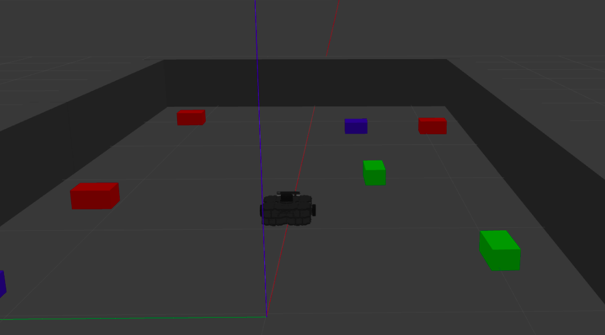
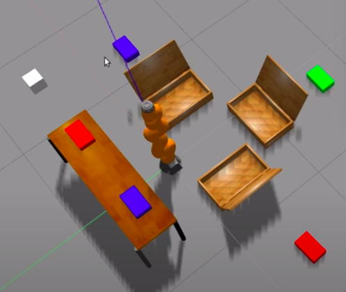

Robotics Engineer with a passion for Computer Vision, AI,
industrial robotics, industrial automation, Embedded systems,
IOT and anything electronics. Love to make DIY projects.
Love to research about new technologies. Strong communication skills.
- B.Tech Electronics and Instrumentation: Vellore Institute of Technology, India
- M.Eng Robotics: University of Maryland, USA
Technical Projects
Turtlebot 3 robot

In this project I have simulated a Turtlebot3 in a sample world I made in Gazebo. I have used the data published
from the /camera topic and /scan topic of the Turtlebot3 to do red object detection and obstacle avoidance
respectively. I am also publishing to the /cmd_vel topic to make it move.
The code can be found using this link.
Object Segregating Arm

In this project an overhead camera will detect the color of the package that can be modified by the user. Local
coordinate of the object will be published w.r.t the manipulator’s location. Eventually the vacuum
gripper of the manipulator will be brought to the object location through an optimal trajectory,
dodging obstacles (static) if any. The gripper will be activated to pick and place the object in
the desired station.The code can be found using this link.
Breadth First Search
This project contains code for solving the 8-Puzzle problem using Breadth first search algorithm. The code is
implemented using C++ and doxygen style comments are provided. The code can be found using this
link.
A* Algorithm
This project contains the implementation of A* algorithm on a point robot. The code is
implemented using MATLAB. The code can be found using this
link.
Dijkstra Algorithm
This project contains the implementation of Dijkstra algorithm on a point robot and rigid robot. The code is
implemented using MATLAB. The code can be found using this
link.